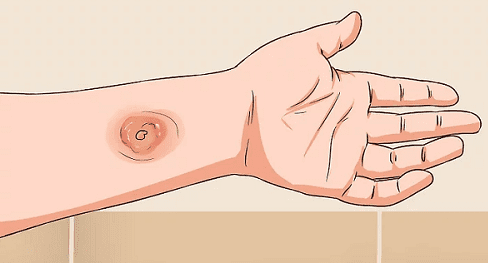

Супермикроб, о котором в последнее время много говорят в новостях, называется МРЗС. Стафилококк — одна из самых распространенных бактерий, живущих на слизистой носа и на коже. Вы смываете его, он возвращается. Как правило, он постоянно находится на поверхности тела и не причиняет никакого вреда. Но если кожный барьер нарушен порезом или царапиной, эти бактерии могут вызвать воспаление кожи. Когда микроб стафилококка проникает через кожный барьер, он проникает вглубь и вызывает воспаление, напоминающее укус насекомого; проникая дальше, он образует фурункул и может спуститься еще глубже, создавая абсцесс. Если микроб не остановить, он может попасть в кровоток и вызвать тяжелую и опасную для жизни инфекцию. В организме происходит война между лекарством и микробами. Люди принимают антибиотики, чтобы победить микробов; микробы изменяют свои гены, чтобы бороться с антибиотиками или стать устойчивыми к ним.
СОВЕТ ДОКТОРОВ СИРС: НЕ ДАВИТЕ, А ПРОКАЛЫВАЙТЕ Если у вашего ребенка крошечный нарыв (примерно с крошку), может возникнуть соблазн выдавить его, когда у него появится созревшая головка. Не делайте этого. Вы рискуете не только поселить микробов на кончиках своих пальцев и под ногтями, а затем передать их другим членам семьи, но еще и загнать возбудителей глубже в кожу. Лучше пусть ваш врач вскроет его стерильной иглой. Или, если у вас нет возможности попасть к врачу, сделайте это сами — стерильной иглой. Проколите только созревшую мягкую белую головку и приложите теплый компресс, чтобы облегчить выход гноя. Наложите мазь с антибиотиком и полностью закройте рану повязкой, как описано ниже. |
В случае МРЗС микробы победили. Этот микроб называется МРЗС, потому что этот тип стафилококка приобрел устойчивость к обычному антибиотику, метициллину, который использовался ранее для лечения инфекций, вызываемых золотистым стафилококком. Но люди всегда умнее микробов и идут на один шаг впереди них, создавая более новые и более сильные антибиотики, чтобы уничтожать возбудителей болезней.
КАК РАСПОЗНАТЬ
Инфекция МРЗС может начаться в виде крошечного воспаления на коже, вроде укуса насекомого. Затем он покрывается корочкой, краснеет и распространяется; это выглядит как кожная инфекция, «которая не проходит». У членов семьи и друзей может быть такая же картина. Сначала вы может подумать, что это просто укус насекомого, но потом он начинает выглядеть немного «злее».

СОВЕТ ДОКТОРОВ СИРС: ЕСЛИ СОМНЕВАЕТЕСЬ, ПРОВЕРЬТЕ Любая затянувшаяся инфекция кожи должна быть обследована вашим педиатром, так как иммунная система ребенка еще не полностью развита. |
ЧТО ДЕЛАТЬ
Если вы подозреваете МРЗС, запишитесь на прием к врачу. Иногда врач делает посев содержимого гнойника, беря мазок с пораженного участка или вскрывая нарыв. Если у нескольких членов семьи наблюдаются одинаковые воспаления на коже, то для посева берут и мазок из носа. Этот материал отправляется в лабораторию, и обычно ваш врач узнает результат в течение 48 часов. Особое подозрение у вас должны вызывать гнойнички на ягодицах, особенно у младенцев. Теплая, влажная, благоприятная для бактерий среда под подгузником — это прекрасное место для развития бактериальных инфекций, особенно МРЗС. Если у вашего младенца появляется фурункул или абсцесс (гнойное воспаление большее по размеру и более глубокое, чем фурункул), это может быть МРЗС.
Если кожное повреждение маленькое и поверхностное, ваш врач, скорее всего, будет лечить его мазью с антибиотиком. Если инфекция проникла в кожу глубже, образовав абсцесс, или имеется несколько фурункулов, врач может назначить перорально антибиотики, которые, на момент написания книги, эффективно борются практически со всеми МРЗС (например, Клиндамицин). Если ваш ребенок выглядит больным и есть риск проникновения инфекции в кровоток, врач может порекомендовать госпитализацию для прохождения курса лечения антибиотиками.
ПРОФИЛАКТИКА
МРЗС, как большинство бактерий, передается при кожном контакте. Это чаще всего случается в людных местах, в первую очередь в больницах, но также в детских дошкольных учреждениях, школьных классах, спортивных раздевалках — в любом месте, где люди, в прямом смысле слова, «касаются» друг друга. Этот супермикроб особенно опасен при занятиях контактными видами спорта, например, борьбой. Чтобы предотвратить заражение своего ребенка любым видом микробов, особенно МРЗС:
СОВЕТ ДОКТОРОВ СИРС: ПОЛНОСТЬЮ ЗАКРЫВАЙТЕ ЕГО Чтобы не допустить заражения других людей МРЗС при контактах, используйте повязку, которая полностью закрывает поврежденное место, например, Актив-Флекс, выпускаемую фирмой Band-Aid. Пластыри-полоски, оставляющие открытые участки, не настолько эффективны, как повязки закрытого типа. Когда пораженный участок кожи полностью покрыт повязкой, ваш ребенок может посещать дошкольные учреждения или школу, не боясь никого заразить. Лечите, перевязывайте, но нет необходимости сажать ребенка на карантин. |
Особенно бдительно следите за развитием кожных воспалений, если у вашего ребенка ослаблена иммунная система или он недавно лежал в больнице.
Здоровье ребенка от докторов Сирс / Сирс У. и др.